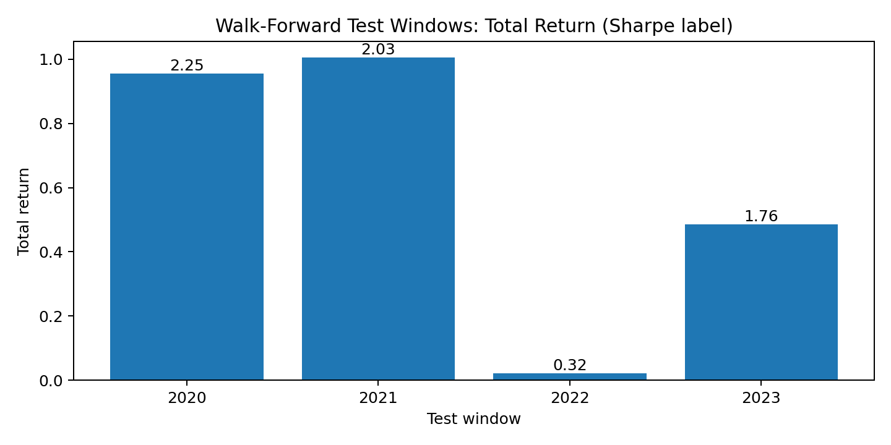
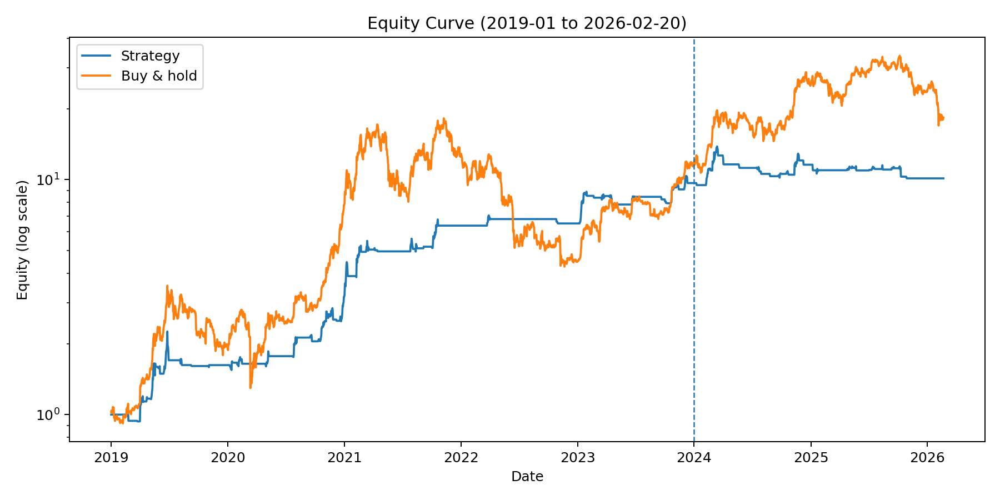
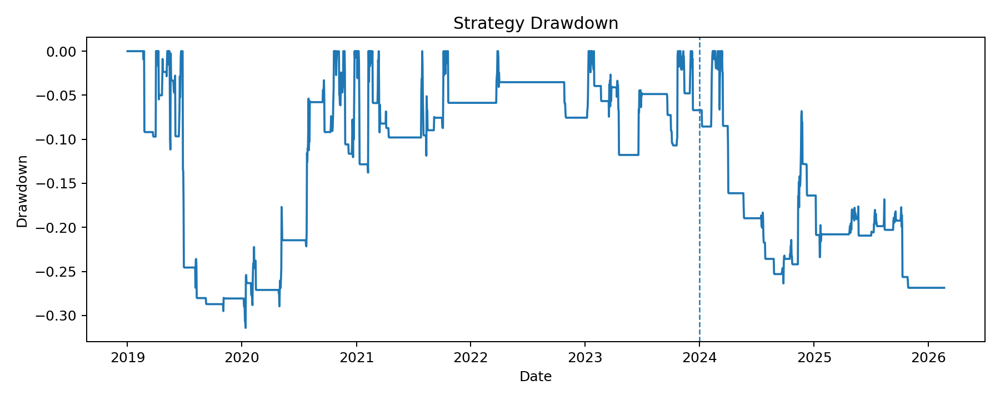
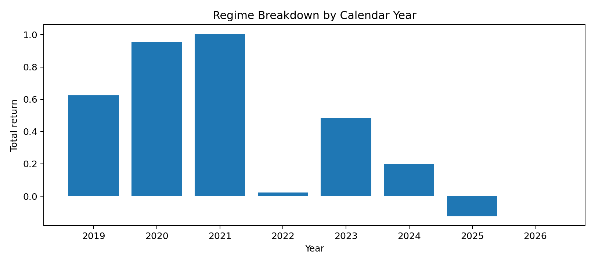
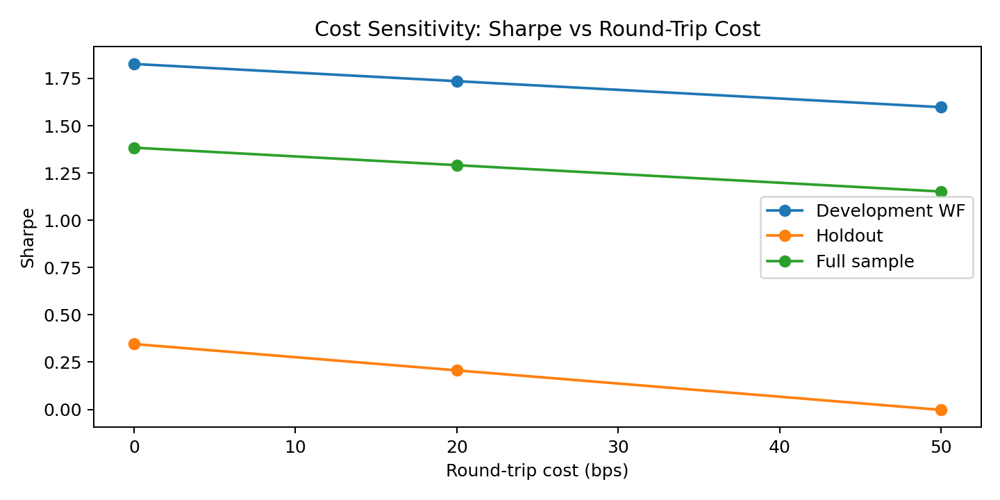
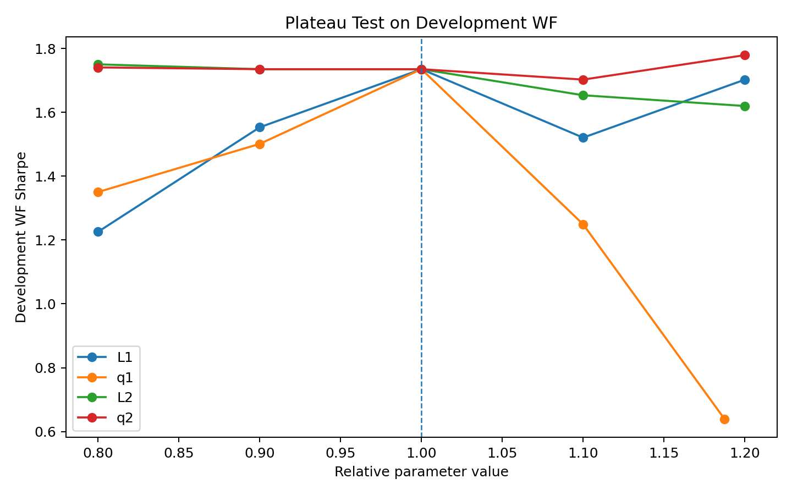
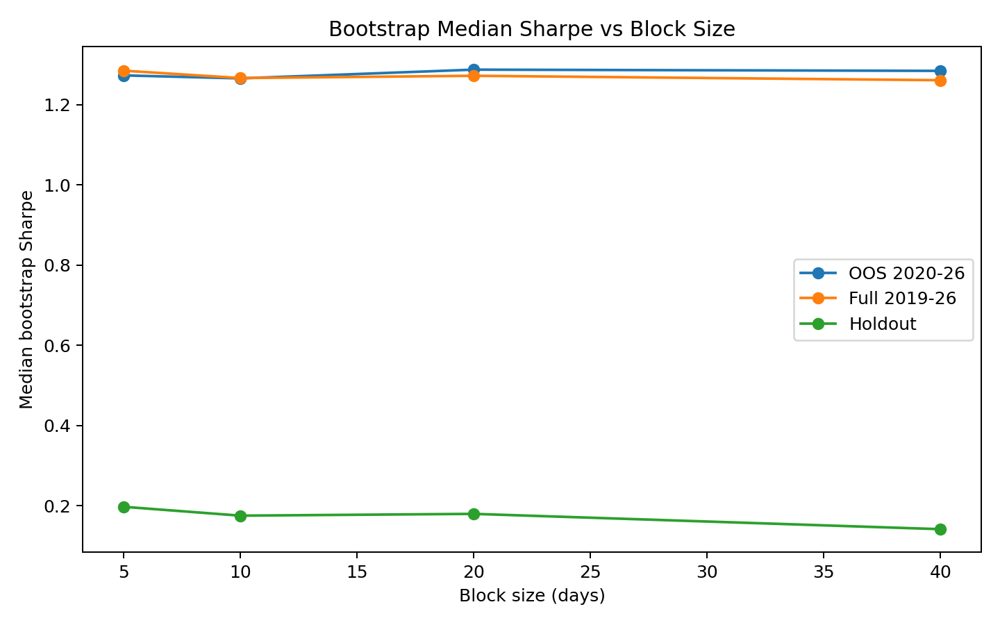
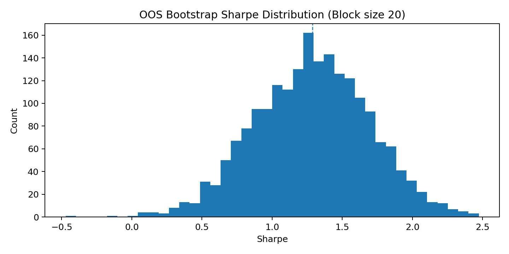
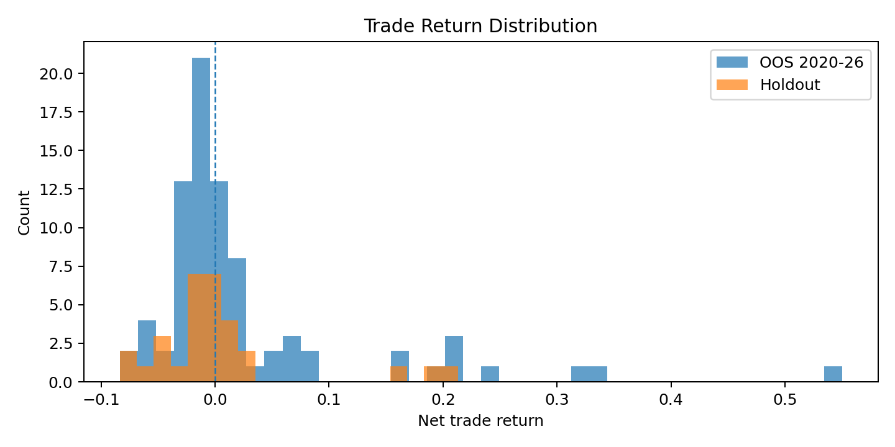

Verdict: COMPETITIVE. The frozen candidate passes the hard criteria on this dataset: aggregate walk-forward performance is positive with all 4 yearly unseen development windows positive; the final holdout is also positive after costs; holdout trade count is 30; and the parameter surface is broad enough in development to avoid a spike-driven result. The weak point is recent performance: holdout Sharpe is only 0.21, with 2025 negative, and holdout bootstrap is only mildly better than a coin flip. That is not strong enough to claim a robust frontier improvement.
On raw full-sample metrics, the candidate is below the benchmark frontier in Sharpe/CAGR. On bootstrap medians, it looks stronger than the benchmark summaries provided in Appendix A, but a fair paired comparison is impossible without benchmark implementations or path-level returns. Because the SUPERIOR definition explicitly requires paired bootstrap against the benchmark path, that claim cannot be made here.
| Item | Locked choice |
|---|---|
| Warmup | 2017-08-17 to 2018-12-31, no trading |
| Development | 2019-01-01 to 2023-12-31 |
| Walk-forward windows | 2020, 2021, 2022, 2023 (annual, non-overlapping) |
| Final holdout | 2024-01-01 to 2026-02-20 |
| Primary performance metrics | Daily Sharpe (365.25 annualization), CAGR, MDD, trade count, exposure |
| Bootstrap | Circular block bootstrap on daily returns; 2,000 resamples; block sizes 5/10/20/40 days |
| Plateau test | One-at-a-time ±20% perturbation at 0.8x/0.9x/1.0x/1.1x/1.2x |
| Complexity budget | Max 4 tunables; binary 0/1 position; no leverage; no regime-specific parameter sets; annual threshold refit only |
Two points mattered immediately. First, raw one-bar autocorrelation is basically useless: H4 lag-1 autocorrelation is -0.045 and D1 lag-1 is -0.051. Second, the exploitable structure appears only after state conditioning: medium-horizon daily trend strength, especially when price stays close to a 60-day high, carries the only durable cost-resilient long edge.
| Channel | Measured fact | Representative feature | Decay horizon | Regime dependence | Redundancy |
|---|---|---|---|---|---|
| Autocorrelation / persistence | H4 and D1 one-bar autocorrelation are near zero to slightly negative (H4 lag1 -0.045, D1 lag1 -0.051), so raw bar-to-bar continuation is not the edge. | Raw returns | Mostly noise / slight short-term reversal | Low | High redundancy among raw returns |
| Medium-horizon trend strength | D1 trendvol_10 was the strongest standalone measured channel. OOS 24-bar conditional return for top train-quantile states: 2.29% vs 1.22% base; positive edge in all 4 WF test years. | D1 trendvol_10 | 2–4 days | Best in 2020/2021/2023, still positive in 2022 | Moderately redundant with D1 ret_20 (phi 0.47) |
| Near-high state | Distance to 60-day high was not a reliable standalone alpha source, but as a filter it materially improved consistency and drawdown when paired with trend strength. | D1 dist_high_60 | Acts more as state filter than trigger | Suppresses 2022 damage by keeping exposure low | Moderate overlap with trendvol_10 (phi 0.36) |
| Volatility / range | H4 volatility/range features showed some conditional edge, but sign stability was poor across folds; better as diagnostics than production filters. | H4 vol/range | 1–4 days | Mixed | Redundant with trend state |
| Volume / order flow | Pure flow features were weak standalone. Best flow-related signal was a breakout-flow interaction; still weaker than price-state channels. | x_breakout_flow | 2–4 days | Mixed; 3/4 positive WF windows | Secondary / complementary |
| Seasonality | Hour-of-day was effectively flat. Day-of-week had some drift but looked too small and too unstable relative to cost to treat as real edge. | Hour, DOW | N/A | Likely spurious | Not used |
| Pullback / mean reversion | Deep dip-buying was not supported. The best “pullback” features were actually shallow-pullback / near-high states, which are trend continuation in disguise. | D1 draw/pullback features | 1–4 days | Works only when pullback stays shallow | Mostly absorbed by near-high filter |
Phase-1 measurement universe: 65 engineered H4/D1/cross-timeframe features × 5 forward horizons = 325 univariate OOS probes, followed by shortlisted state/hold-rule tests.
| Channel | Feature | Forward horizon (bars) | Selected-state mean fwd return | Base mean fwd return | Spread vs base | Net per-trade edge at 20 bps | Positive test-window fraction | State frequency |
|---|---|---|---|---|---|---|---|---|
| trend | d1_trendvol_10 | 24.000 | 2.3% | 1.2% | 0.011 | 0.021 | 1.000 | 0.198 |
| trend | h4_trendvol_24 | 24.000 | 1.7% | 1.1% | 0.006 | 0.015 | 0.750 | 0.186 |
| trend | d1_pullback_20 | 24.000 | 1.6% | 1.0% | 0.006 | 0.014 | 0.750 | 0.221 |
| trend | d1_draw_20 | 24.000 | 1.6% | 1.0% | 0.006 | 0.014 | 0.750 | 0.221 |
| trend | d1_ret_10 | 24.000 | 1.6% | 0.9% | 0.006 | 0.014 | 0.500 | 0.137 |
| trend | d1_trendvol_20 | 24.000 | 1.5% | 1.3% | 0.003 | 0.013 | 0.750 | 0.196 |
| trend | d1_pullback_10 | 24.000 | 1.5% | 1.0% | 0.005 | 0.013 | 0.750 | 0.208 |
| trend | d1_draw_10 | 24.000 | 1.5% | 1.0% | 0.005 | 0.013 | 0.750 | 0.208 |
| vol_range | x_exhaustion | 24.000 | 1.3% | 1.1% | 0.002 | 0.011 | 0.500 | 0.180 |
| vol_range | h4_vol_24 | 24.000 | 1.3% | 0.7% | 0.006 | 0.011 | 1.000 | 0.195 |
| vol_range | h4_rng_24 | 24.000 | 1.2% | 0.8% | 0.004 | 0.010 | 0.750 | 0.199 |
| vol_range | h4_vol_6 | 24.000 | 1.2% | 0.7% | 0.005 | 0.010 | 1.000 | 0.183 |
| Hypothesis | Mechanism | What it exploits | Minimal expression tested | Expected failure mode | Falsification test |
|---|---|---|---|---|---|
| H1 (finalist) | Trend strength + long-term near-high | Daily trend persistence in strong BTC impulse regimes | trendvol_10 >= q0.8 AND dist_high_60 >= q0.6 | Sharp reversals from elevated highs / non-trending years | Holdout negative or parameter plateau collapses |
| H2 | Momentum + near-high | Medium-horizon momentum continuation once regime already strong | ret_20 >= q0.8 AND dist_high_40 >= q0.7 | Momentum slows earlier than trend-strength signal | WF or holdout deterioration despite positive trend regime |
| H3 | Long-term momentum regime only | Engage only when 60-day drift is already strong | ret_60 >= q0.6 | Too slow; can give back on reversals | Persistent underperformance vs H1 on unseen data |
| H4 | Flow breakout pulse | Buyer aggression confirms breakouts | breakout-flow interaction high | Late breakout chasing in mature moves | Edge disappears after cost / turnover |
| family | features | quantiles | sharpe | cagr | mdd | trade_entries | wf_pos_windows | wf_min_window_return |
|---|---|---|---|---|---|---|---|---|
| ret_nearhigh | ('ret_20', 'dist_high_40') | (0.8, 0.7) | 1.515 | 0.388 | -0.130 | 36.000 | 4.000 | 0.4% |
| single_nearhigh | ('dist_high_40',) | (0.7,) | 1.525 | 0.623 | -0.333 | 61.000 | 3.000 | -23.8% |
| single_ret | ('ret_20',) | (0.8,) | 1.213 | 0.345 | -0.287 | 34.000 | 4.000 | 0.4% |
| single_trendvol | ('trendvol_5',) | (0.7,) | 1.368 | 0.514 | -0.384 | 127.000 | 3.000 | -27.8% |
| trendvol_nearhigh | ('trendvol_10', 'dist_high_60') | (0.8, 0.6) | 1.696 | 0.534 | -0.159 | 50.000 | 4.000 | 6.6% |
The winning family was trendvol + near-high. The best coarse configuration inside that family was (trendvol_10, dist_high_60, q1=0.8, q2=0.6), which produced a development walk-forward Sharpe of 1.70 with all 4 test years positive and materially lower drawdown than the simpler single-filter variants.
I kept the design deliberately small. The data did not justify H4 timing overlays, volume add-ons, or path-dependent exits. Triplet extensions were tested and did not beat the simple pair once complexity was penalized.
| Component | Frozen specification |
|---|---|
| Timeframe | D1 |
| Feature 1 | trendvol_10 = 10-day return / (10-day stdev(daily returns) * sqrt(10)) |
| Feature 2 | dist_high_60 = close / rolling 60-day high - 1 |
| Calibration procedure | At each Jan 1, estimate q0.8(trendvol_10) and q0.6(dist_high_60) from all completed data up to Dec 31 of prior year |
| Entry rule | At daily close, set desired long for next day if trendvol_10 >= threshold_1 AND dist_high_60 >= threshold_2 |
| Exit rule | Go to cash when either condition fails |
| Position sizing | 100% long or 0% cash |
| Execution | Signal on daily close, fill next day open, 10 bps per side |
| Tunables | trend lookback 10, near-high lookback 60, quantiles 0.8 and 0.6 |
| Actual holdout thresholds | 2024: (1.0641, -0.1101); 2025: (1.0867, -0.0981); 2026: (1.0772, -0.0938) |
Search accounting: 246 family-level D1 configurations across five mechanism families, 108 coarse configurations inside the winning family, and 540 three-filter extensions to test whether extra complexity earned its place. It did not.
| Test year | Total return | CAGR | MDD | Sharpe | Trades | Exposure |
|---|---|---|---|---|---|---|
| 2020 | 95.6% | 95.4% | -12.0% | 2.245 | 19 | 27.9% |
| 2021 | 100.5% | 100.6% | -13.8% | 2.025 | 13 | 18.6% |
| 2022 | 2.2% | 2.2% | -7.6% | 0.320 | 3 | 3.6% |
| 2023 | 48.5% | 48.6% | -11.8% | 1.757 | 17 | 23.6% |

| Year | Total return | CAGR | MDD | Sharpe | Trades | Exposure |
|---|---|---|---|---|---|---|
| 2024 | 19.7% | 19.7% | -26.4% | 0.823 | 18 | 21.9% |
| 2025 | -12.5% | -12.5% | -12.5% | -0.872 | 12 | 16.2% |
| 2026 | 0.0% | 0.0% | 0.0% | nan | 0 | 0.0% |
The holdout is positive overall, but the shape is mediocre rather than dominant: 2024 carried the gains, 2025 gave back part of them, and early 2026 stayed in cash. That keeps the candidate alive under the hard criteria, but it is the main reason the final verdict stops at COMPETITIVE.
| Slice | Total return | CAGR | MDD | Sharpe | Trades | Exposure |
|---|---|---|---|---|---|---|
| Development WF aggregate (2020-2023) | 495.3% | 56.2% | -13.8% | 1.735 | 51 | 18.4% |
| Final holdout (2024-2026-02-20) | 4.7% | 2.2% | -26.9% | 0.207 | 30 | 17.8% |
| Full sample descriptive (2019-2026-02-20) | 912.6% | 38.3% | -31.4% | 1.291 | 93 | 18.0% |


| Regime | Year | Total return | CAGR | MDD | Sharpe | Trades | Exposure |
|---|---|---|---|---|---|---|---|
| 2019 recovery | 2019 | 62.4% | 62.5% | -29.5% | 1.394 | 12 | 17.0% |
| 2020 shock-to-bull | 2020 | 95.6% | 95.4% | -12.0% | 2.245 | 19 | 27.9% |
| 2021 cycle advance | 2021 | 100.5% | 100.6% | -13.8% | 2.025 | 13 | 18.6% |
| 2022 bear | 2022 | 2.2% | 2.2% | -7.6% | 0.320 | 3 | 3.6% |
| 2023 recovery | 2023 | 48.5% | 48.6% | -11.8% | 1.757 | 17 | 23.6% |
| 2024 breakout bull | 2024 | 19.7% | 19.7% | -26.4% | 0.823 | 18 | 21.9% |
| 2025 range/down | 2025 | -12.5% | -12.5% | -12.5% | -0.872 | 12 | 16.2% |
| 2026 early pullback | 2026 | 0.0% | 0.0% | 0.0% | nan | 0 | 0.0% |

| roundtrip_cost_bps | dev_sharpe | dev_cagr | dev_mdd | dev_total_return | hold_sharpe | hold_cagr | hold_mdd | hold_total_return | full_sharpe | full_cagr | full_mdd | full_total_return |
|---|---|---|---|---|---|---|---|---|---|---|---|---|
| 0.000 | 1.826 | 0.602 | -0.136 | 559.1% | 0.346 | 0.051 | -0.250 | 11.2% | 1.384 | 0.419 | -0.304 | 1119.3% |
| 20.000 | 1.735 | 0.562 | -0.138 | 495.3% | 0.207 | 0.022 | -0.269 | 4.7% | 1.291 | 0.383 | -0.314 | 912.6% |
| 50.000 | 1.598 | 0.503 | -0.140 | 410.9% | -0.002 | -0.020 | -0.325 | -4.3% | 1.152 | 0.330 | -0.329 | 666.1% |

Development performance survives 50 bps round-trip stress, but the holdout does not. That is another caution sign: the system is cost-resilient in the discovery years, not in the recent regime.
| variant | dev_sharpe | dev_cagr | dev_mdd | dev_trades | hold_sharpe | hold_cagr | hold_mdd | hold_trades | full_sharpe | full_cagr | full_mdd | full_trades |
|---|---|---|---|---|---|---|---|---|---|---|---|---|
| Full system | 1.735 | 0.562 | -0.138 | 51.000 | 0.207 | 0.022 | -0.269 | 30.000 | 1.291 | 0.383 | -0.314 | 93.000 |
| Ablate near-high (trendvol only) | 1.449 | 0.454 | -0.196 | 60.000 | 0.592 | 0.110 | -0.220 | 32.000 | 1.253 | 0.379 | -0.305 | 104.000 |
| Ablate trend strength (near-high only) | 1.406 | 0.688 | -0.478 | 34.000 | 0.220 | 0.018 | -0.481 | 28.000 | 1.133 | 0.480 | -0.481 | 69.000 |
On development walk-forward data, both modules earn their place: the pair improves Sharpe and sharply compresses drawdown relative to either single module. On holdout, the near-high filter did not help. That is a genuine out-of-sample warning and should not be hand-waved away.
| axis | value | dev_sharpe | dev_cagr | dev_mdd | hold_sharpe | hold_cagr | hold_mdd |
|---|---|---|---|---|---|---|---|
| L1 | 8.000 | 1.226 | 0.364 | -0.268 | 0.134 | 0.008 | -0.263 |
| L1 | 9.000 | 1.553 | 0.505 | -0.198 | 0.281 | 0.036 | -0.202 |
| L1 | 10.000 | 1.735 | 0.562 | -0.138 | 0.207 | 0.022 | -0.269 |
| L1 | 11.000 | 1.521 | 0.506 | -0.207 | -0.006 | -0.017 | -0.316 |
| L1 | 12.000 | 1.703 | 0.596 | -0.225 | 0.168 | 0.014 | -0.289 |
| q1 | 0.640 | 1.350 | 0.522 | -0.314 | 0.497 | 0.100 | -0.292 |
| q1 | 0.720 | 1.501 | 0.565 | -0.259 | 0.076 | -0.007 | -0.334 |
| q1 | 0.800 | 1.735 | 0.562 | -0.138 | 0.207 | 0.022 | -0.269 |
| q1 | 0.880 | 1.249 | 0.307 | -0.139 | -0.391 | -0.058 | -0.266 |
| q1 | 0.950 | 0.639 | 0.090 | -0.256 | -0.648 | -0.050 | -0.178 |
| L2 | 48.000 | 1.751 | 0.569 | -0.138 | 0.551 | 0.098 | -0.256 |
| L2 | 54.000 | 1.735 | 0.562 | -0.138 | 0.333 | 0.049 | -0.262 |
| L2 | 60.000 | 1.735 | 0.562 | -0.138 | 0.207 | 0.022 | -0.269 |
| L2 | 66.000 | 1.654 | 0.524 | -0.138 | 0.275 | 0.036 | -0.242 |
| L2 | 72.000 | 1.620 | 0.506 | -0.162 | 0.243 | 0.029 | -0.247 |
| q2 | 0.480 | 1.741 | 0.565 | -0.138 | 0.381 | 0.060 | -0.220 |
| q2 | 0.540 | 1.735 | 0.562 | -0.138 | 0.394 | 0.063 | -0.220 |
| q2 | 0.600 | 1.735 | 0.562 | -0.138 | 0.207 | 0.022 | -0.269 |
| q2 | 0.660 | 1.703 | 0.545 | -0.150 | 0.108 | 0.002 | -0.284 |
| q2 | 0.720 | 1.779 | 0.564 | -0.159 | -0.165 | -0.049 | -0.307 |

Development plateau verdict: acceptable, not perfect. Lookback parameters are broad. The q2 near-high threshold is also broad. The sharpest axis is q1: pushing the trend-strength threshold too high (>0.88) degrades quickly. So this is not a knife-edge result, but it is also not infinitely forgiving.
Primary bootstrap view below is on fully unseen returns from 2020-01-01 to 2026-02-20. The holdout-only bootstrap is much weaker, which is exactly what the raw holdout equity already hinted.
| block_size | median_sharpe | p_sharpe_gt_0 | median_cagr | p_cagr_gt_0 | median_mdd | sharpe_p05 | sharpe_p95 | cagr_p05 | cagr_p95 |
|---|---|---|---|---|---|---|---|---|---|
| 5.000 | 1.273 | 1.000 | 0.338 | 0.999 | -0.250 | 0.650 | 1.885 | 0.134 | 0.607 |
| 10.000 | 1.266 | 0.998 | 0.337 | 0.996 | -0.246 | 0.645 | 1.875 | 0.133 | 0.616 |
| 20.000 | 1.287 | 0.999 | 0.344 | 0.998 | -0.250 | 0.605 | 1.939 | 0.122 | 0.662 |
| 40.000 | 1.284 | 0.999 | 0.339 | 0.998 | -0.243 | 0.614 | 1.908 | 0.120 | 0.658 |
| block_size | median_sharpe | p_sharpe_gt_0 | median_cagr | p_cagr_gt_0 | median_mdd | sharpe_p05 | sharpe_p95 | cagr_p05 | cagr_p95 |
|---|---|---|---|---|---|---|---|---|---|
| 5.000 | 0.198 | 0.604 | 0.020 | 0.547 | -0.243 | -0.980 | 1.283 | -0.179 | 0.278 |
| 10.000 | 0.176 | 0.600 | 0.015 | 0.549 | -0.249 | -1.113 | 1.286 | -0.189 | 0.298 |
| 20.000 | 0.180 | 0.587 | 0.016 | 0.536 | -0.257 | -1.192 | 1.381 | -0.193 | 0.338 |
| 40.000 | 0.142 | 0.560 | 0.007 | 0.522 | -0.262 | -1.294 | 1.357 | -0.197 | 0.339 |
| block_size | median_sharpe | p_sharpe_gt_0 | median_cagr | p_cagr_gt_0 | median_mdd | sharpe_p05 | sharpe_p95 | cagr_p05 | cagr_p95 |
|---|---|---|---|---|---|---|---|---|---|
| 5.000 | 1.285 | 1.000 | 0.377 | 0.998 | -0.298 | 0.715 | 1.843 | 0.165 | 0.644 |
| 10.000 | 1.266 | 1.000 | 0.369 | 0.999 | -0.298 | 0.626 | 1.858 | 0.139 | 0.671 |
| 20.000 | 1.272 | 0.999 | 0.373 | 0.999 | -0.293 | 0.692 | 1.870 | 0.151 | 0.697 |
| 40.000 | 1.261 | 1.000 | 0.365 | 1.000 | -0.289 | 0.684 | 1.848 | 0.145 | 0.700 |


| Slice | Trades | Win rate | Avg trade | Avg win | Avg loss | Profit factor | Median holding days | Top-5 winners share of gross profits | Churn <=2 days |
|---|---|---|---|---|---|---|---|---|---|
| OOS 2020-2026 | 81 | 44.4% | 2.7% | 9.1% | -2.4% | 3.017 | 3.000 | 50.3% | 0.444 |
| Holdout 2024-2026 | 30 | 40.0% | 0.4% | 5.6% | -3.1% | 1.193 | 3.000 | 91.6% | 0.433 |

There is no obvious winner truncation in the long OOS record: profit factor is ~3.0 and gross profits are not dominated by just one or two trades. Holdout is weaker and more fragile: roughly 92% of holdout gross profits came from its top 5 winners.
| System | Sharpe | CAGR | MDD | Trades | Bootstrap median Sharpe (b20) | Bootstrap median CAGR (b20) | P(Sharpe>0) (b20) |
|---|---|---|---|---|---|---|---|
| Our candidate (full sample, annual refit) | 1.291 | 38.3% | -31.4% | 93 | 1.272 | 37.3% | 99.9% |
| Benchmark A | 1.638 | 72.8% | -38.5% | 186 | 0.766 | 24.4% | 96.8% |
| Benchmark B | 1.830 | 80.4% | -33.6% | 196 | 0.733 | 21.7% | 96.6% |
| Benchmark C | 1.533 | 57.8% | -37.3% | 211 | 0.516 | 12.2% | 89.4% |
Comparison conclusion. Against the benchmark summaries from Appendix A, this candidate is not the raw-performance leader: its full-sample Sharpe and CAGR are lower than A/B/C. Its bootstrap medians are stronger than the benchmark summaries provided, but that comparison is unpaired and therefore insufficient to claim superiority. Because Appendix A does not provide benchmark rules or path-level returns, the paired bootstrap required by the protocol cannot be executed. So the honest ranking is: robust enough to be COMPETITIVE, not strong enough to prove SUPERIOR.
trendvol_10 >= q0.8 and dist_high_60 >= q0.6, re-estimated once per calendar year from prior data only.